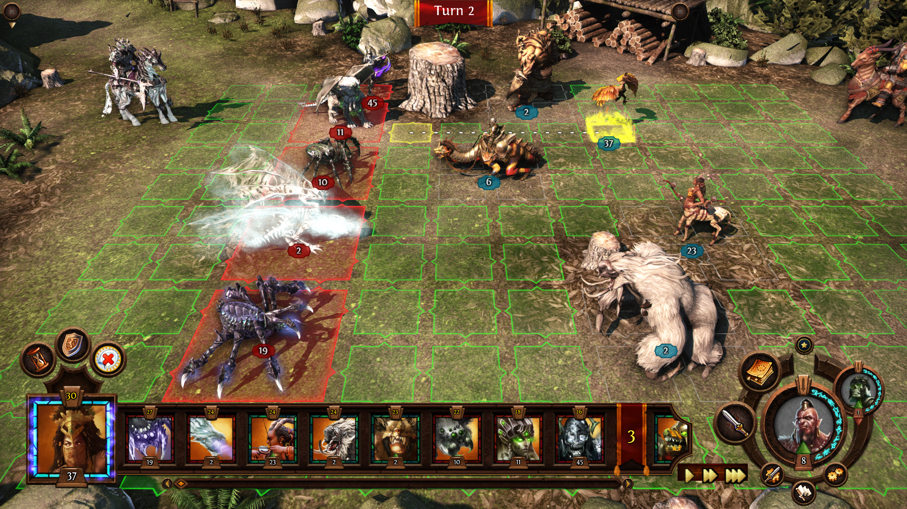

When we say that we love a game, that usually means one of two things: that the game in question is a masterpiece, or we feel especially connected to it for nostalgic reasons. In the case of Heroes of Might and Magic 3, a game that I love, both of these things are true. (I will refer to Heroes of Might and Magic 3 as Heroes 3 from now on.)

Heroes 3 presents a magical world full of intriguing conflicts. Its blend of world exploration and turn-based combat finds depth in a satisfying leveling system and a multitude of different tactical arcs. But it is also a perfect game for young children that only have one computer, because you can basically play it like hot-seat chess. The anticipation grows as you wait impatiently for your turn and then try to figure out what your friend did during their turn and how you are going to respond. I played Heroes 3 in precisely this way at my best friend's place, not owning the game myself until many years later. It is these social experiences that make it one of my most memorable games and the reputation the game holds to this day suggests the same is true for many others.
Now let me talk about the game itself. It has among the best music in all of gaming, with impressively pompous themes to rival Baba Yetu from Civilization. My favorite is the Rampart theme -- it is basically the elves and ents from Lord of the Rings with a beautiful and calming melody. An excellent soundtrack if you have been in too many battles or dealing with the stress of the more overbearing and threatening Inferno or Necropolis towns.